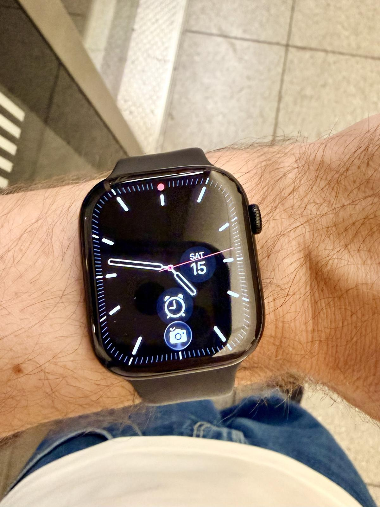

I would love to just have a good old Casio watch, but there are two reasons why I have a smartwatch instead:
- I need a silent alarm to wake me up in the morning without waking my husband.
- I want a step counter that counts every step instead of just those when I carry my phone so that the number looks higher.
For many years, I had a Fitbit. It did these two things very well, and I was happy.
But then four events roughly coincided in time. Firstly, Google bought Fitbit and demanded to get all my data. Secondly, I bought an iPhone Pro Max, thinking the bigger screen would make reading more pleasant than a normal-sized phone. Thirdly, London became the phone theft capital of the world and I started worrying about having my phone snatched when taking it out to skip the ads in the podcast I was listening to, or whatever. And lastly, I went to Korea and was able to buy an Apple Watch on the cheep.
That was why I decided to get an Apple Watch. I wanted a non-Google, phone-snatching-preventing iPhone remote at a discount.
I have now had my Apple Watch Series 11 for 10 months and feel there are a few things I want to get off my chest, so here’s a very honest review.
Look and feel
I bought a black watch with a black rubber strap, and it looks pretty minimal, even if it’s very visibly an Apple Watch. From a distance, it looks like every other Apple Watch, and it feels as if the design hasn’t evolved since the launch of the first Apple Watch.
The Screen is clear and bright and is always easy to read, regardless of how sunny it is.
Verdict: Fine
Battery
The thing I worried about the most when getting the Apple Watch was the battery. My Fitbit lasted about 10 days on a single charge, whereas an Apple Watch requires a daily charge. In practice, this hasn’t been a problem. I take it off when I shower in the morning and pop it on the charger, giving it a 15-20 minute charge, and that’s all it needs. Plus, I’ve found that if I miss charging it, it almost lasts a second day with my usage.
Verdict: Fine
As a phone remote
The watch does a good job showing iMessage notifications, and lets me thumb-up messages without getting my phone out, which is convenient. There are some pre-defined responses it lets me send as well, but these would come across as passive-aggressive for my communication style. I would never send just “No” to someone, and offering to call someone later is just not part of my vocabulary. There is a little on-screen keyboard to type messages, but it’s just too small to be useful for me.
I thought the watch would be a convenient way to control my phone and was planning to use it to fast-forward during the ad breaks in the podcasts I listen to. However, it turns out that the watch is virtually unusable in this scenario. Often, it doesn’t seem to be aware that I’m listening to a podcast, and when it is, the skipping forward is so sluggish it’s not useful. So I still have to get my phone out and do what I need to do instead.
Verdict: A bit crap
The alarm
As I mentioned, the silent alarm is my primary use case for a smartwatch. The Apple Watch has a decent enough vibration which is enough to wake me up, and it is possible to disable snoozing, so I don’t get that annoying second alarm because I tapped the screen the wrong way. All in all, it works fine.
However, my big issue with the Apple Watch alarm is how over-complicated it is. Rather than setting a normal, simple alarm, I have to set my wake-up alarm as part of the so-called Sleep Focus. The sleep focus is mandatory to use, you see, or the watch won’t track sleep. Plus, there is some kind of weird link with the iPhone, where the alarm sometimes decide to go off on the phone instead, while it’s set to silent and sits on the charger, completely unnoticed.
Why not just have a good old simple alarm?
Verdict: Fine, but I hate how complicated it is
Health functions
Health tracking seems to be one of the very few genuine use cases for a smartwatch, and the Apple Watch comes with plenty of features in this area.
- Step counter (which is one of my top reasons for a smartwatch): Works really well, but Apple are trying to impose their view that counting steps is not very useful. The built-in widgets don’t allow you to simply show the number of steps. It’s all about Apple Health’s circles instead.
- Sleep tracking: As I mentioned, the Apple Watch needs to be in “sleep focus” to track sleep, so don’t expect your unplanned nap to be tracked. The tracking itself seems accurate and seems to capture the detail well, so no complaints there. However, the sleep score is absolutely bonkers and has nothing to do with how rested I feel. Apple have decided to let the bedtime make up 30% of the score, so my 5h 54m sleep with several wake-ups still gives a 84-point score, classed as “High”. Just because I went to bed at the same time as usual.
- Heart rate: Seems to work well. It’s not always active, but takes samples throughout the day.
- ECG: Feels rather gimmicky and requires that you hold your finger on the knob on the side of the watch. That said, it might be useful as a bit of reassurance for some.
Plus many more features. More than I need.
Verdict: Good, but the sleep score is not very representative of how well I sleep
Everything else
There are obviously a lot more features than what I’ve mentioned. Some of them:
- Calculator: Pretty useful, but it’s much quicker to get my phone out than using the tiny interface
- Home (to control smart home devices): Works well enough to turn on a light or two to not bother walking over to the phone on the charger
- Maps: Too small to be useful for me
- Noise: Notifies me that the sound is loud whenever I use a hand dryer or travel by the tube. Unclear what I should do with this information.
- Wallet: It’s possible to pay using the watch but it’s quicker to just get the phone out.
Verdict: Fine
Plus some other little annoyances
As you will have gathered by now, I don’t love my Apple Watch. There are just too many annoying little things to make me feel the kind of affection like I felt for the Fitbit. A couple more:
- When setting the alarm, you can, for some reason, not swipe the screen, and you have to use the knob on the side. Apple seem to think that because there is a knob, they need to force you to use it.
- “Hey Siri” is massively annoying when living in a household filled with multiple Apple devices as it’s random which one responds, so I’ve turned this off on the watch.
Conclusion
So, what’s my overall verdict after 10 months with the Apple Watch Series 11?
Well, first, let’s just say this: the Apple Watch Series 11 is perfectly fine for what I use it for. It’s solidly built and works well.
That said, I had higher expectations, and I am a bit disappointed. I thought it would be as thought-through as most other things Apple. I thought there would be something that was really clever that I didn’t know I wanted but now can’t live without.
Overall rating: ⭐️⭐️⭐️ 3/5
If it was lost in a fire, would I buy it again? That’s the question I use to measure most of my possessions. The answer is… I don’t know. Honestly, I don’t think I would.